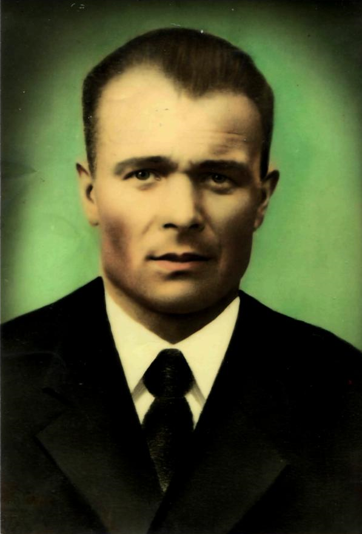

Сумченко Георгий Семёнович

Родился 6 мая 1908 года в селе Бобрава (посёлок Трудовик). Отец и мать были простыми крестьянами. В семье было пять детей. Отец Семён Дмитриевич после коллективизации был первым председателем колхоза «Красный Трудовик». Мать Ульяна Ивановна была простой труженицей колхоза. Георгий Семёнович был самым старшим ребёнком в семье. Он закончил семь классов школы и работал в колхозе в поле. В 1928 году дедушка женился на Анастасии Петровне. У них родились шесть детей. В те времена на селе было очень мало грамотных людей и деда назначили председателем колхоза и послали учиться в Кучеровский техникум. После успешного окончания техникума ему выдали удостоверение агронома-полевода сельского хозяйства. С 1932 по 1938 годы дед работал председателем колхоза. За высокие показатели колхоза по выращиванию зерновых культур и сахарной свёклы Георгий Семёнович был награждён одним из первых в Ракитянском районе Орденом Ленина. С 1939 по 1941 год был назначен директором Машино-тракторной станции (МТС). С первых дней войны дед был в рядах Советской армии. Был зачислен в развед войска топографом. Деду пришлось пройти вместе с героическими жителями Ленинграда всю блокаду. Там же, в Ленинграде, в разведке получил ранение. 7 ноября 1945 года дед вернулся домой. Георгий Семёнович имел боевые награды: «За оборону Ленинграда», «За победу» и был удостоин всех юбилейных медалей в честь Дня Победы. В 1946 году родился сын, а в 1948 году – дочь. Георгий Семенович и Анастасия Петровна вырастили семерых детей. После военной разрухи дедушка продолжил работать председателем колхоза. При укрупнении колхозов, колхозы «Красный Трудовик» и «40 лет Октября» слились в один колхоз – «40 лет Октября». Председателем стал Кравцов Кузьма Михайлович, а дед возглавил полеводческую бригаду. Годы шли, сил становилось всё меньше, подрастали дети, которые приходили на смену с новыми знаниями, дед стал работать сторожем. На этом месте он проработал до самой смерти. В 1978 году 31 января Георгий Семёнович ушёл из жизни. Похоронен в селе Борисполье Ракитянского района Белгородской области.
На главную